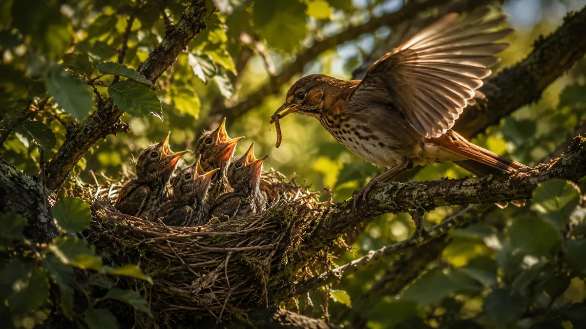

Every episode of The Orb Story The Orb Story runs through a small stack of AI tools, each doing one job well rather than one tool trying to do everything. Here's the actual pipeline, start to finish.
The Orb Story runs through a small stack of AI tools, each doing one job well rather than one tool trying to do everything. Here's the actual pipeline, start to finish.
Concept art and stills
Every scene starts as a still. I lean on Midjourney and ChatGPT's image tools (including the model people have nicknamed "Nano Banana") to rough out mood, lighting, and composition before anything moves. Getting the still right first saves a huge amount of time later - if the atmosphere isn't working as a single frame, it's not going to work in motion either.

Motion
Once a still earns its place, it moves into video generation. Kling and Seedance handle most of the motion work here - camera drift, atmosphere, subtle character movement. I'll usually run a handful of variations and cut together the ones with the most natural weight and timing.
Voice and sound
ElevenLabs handles voice work when a scene calls for it, and Suno has become a fast way to sketch score ideas before committing to a final mix. Neither replaces a real performance - they're best as a way to test whether a scene's pacing actually works before investing more time in it.
Why bother explaining the pipeline?
Mostly because people ask. If you're curious about applying any of this to your own AI shorts, music, or art, that's genuinely what this blog is for - I'll keep posting real breakdowns like this one as new episodes and tracks go up.